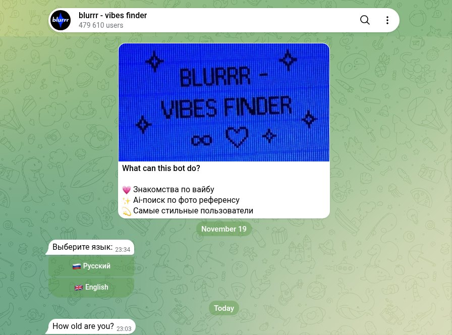

Telegram Dating Bots: 22 Tested, 9 Were Just Ad Links
Telegram's own way to find people near you, People Nearby, was removed in September 2024. So if you want a date through Telegram, you search for a bot. I wanted to know what that search actually gives you. In November 2026 I collected the bots Telegram's own search returns for eleven English dating queries and messaged the 22 that call themselves dating bots. I tapped anything that didn't cost me personal data and stopped at the first question that did.
Nine of the 22 turned out to be link signposts under different names, from what looks like two operators. Three never answered. Most of the rest asked for a name, an age or which gender I was looking for, and two sent me off to a website. Not one showed me another person. The biggest, @blurrr_dating_bot with about 480,000 monthly users, asked how old I was after a language menu and an emoji check.
How I tested
The rules were written down before the first search, so the results couldn't bend them.
- Where the bots came from. Telegram's own global search, eleven English queries: dating, dating bot, dating app, date, match, matchmaking, singles, find love, love, relationship and tinder. Only bots that search shows to anyone count, not ones it suggested because of my own chat history. The Russian and Ukrainian words for dating were already covered in my test of friend-finding bots. Eight bots came up here only because I had messaged them in earlier tests, four of them in that one, @leomatchbot among them. They are left out of the counts below.
- What counts as a dating bot. Its own name, description or first message has to promise dating, a match or a partner. Adult bots, an online shop, earn-money games, anonymous message bots and anything not about dating were set aside and counted, and the adult ones and the shop were never messaged at all.
- What I did in each chat. One
/start, then only taps that give nothing away: a language, OK, skip. At the first request for a name, age, gender, photo, phone number, location, a channel subscription or a payment, I stopped and wrote down which one it was. I never opened a link a bot sent me. Where a link went, I read from the link itself. - Pacing. At least 18 seconds between messages, and never on a night when the account had already sent more than 60.
What Telegram search returns for "dating"
The eleven queries returned 47 bots, 39 of them in the results anyone sees. Tinder returned a single bot without a username. The busiest were dating and dating bot, with eleven bots each.
Sorted by their own words:
- 20 in scope by their description.
- 11 out: two adult bots and an online shop selling something it wouldn't name, none of which I messaged; an anonymous message bot; an earn-money game; a bot that says itself it has been switched off; and five that aren't about dating at all (a padel partner finder, a business networking bot, a psychology exercise, a tool that shows when an account was created, and a viral video bot).
- 8 with no description, so their first reply decided. Two turned out to be dating bots. One was an adult couples game, one was a channel's inbox for anonymous "takes" that a person reads, and four never answered.
That left 22 dating bots to test. The biggest by far is @blurrr_dating_bot, with 485,872 monthly users on its profile on 19 November and 479,610 a day later. Most of the rest show no user count at all.
Two operators, nine names
Search Telegram for dating and four of the top five bots are called "Bekanntschaften 🇩🇪", German for "acquaintances". Their usernames look machine-made: @BERLIN4AQLQBOT, @Chattenqabot, @Berlinrqsbot, @BERLINEAQDQBOT. A fifth, @BERLIN6AQLQBOT, comes up for date. All five have the same two-line description, "Finde deine Liebe. Drück Start." Find your love, press start.
I pressed start. All five answered with nothing but links: an invite to a Telegram group, then links labelled "Dating", "Kommunikation", "AI dating" and one for adult content, and in four of the five a link labelled "CASINO CASINO" as well. No profile, no question, nothing to tap. The group invite was the same in all five, and every dating link went through the same tracking domain, go.cm-trk6.com, with the same affiliate codes in the address. The order of the links changed a little from bot to bot. The codes didn't.
Four more do the same in English, under names like "Dating ❤️" and "Find Love USA Dating" and descriptions that all say some version of "Find your love, tap start": @Taqwepkhgxzbot, @tetubvsgvcxbot, @shsbxhebrbot and @fndnwdbfsbot. Three of them share one set of affiliate codes. @fndnwdbfsbot carries the German group's codes instead. All nine send you through the same tracking domain, so 9 of the 22 dating bots come from what looks like two operators, and not one of the nine shows a single profile. They are signposts that get paid when you click through.
They aren't small, either. @Berlinrqsbot shows 60,281 monthly users, and the four German ones that show a count add up to almost 99,000. Telegram's rules for bot developers say a bot, "including its name, username and branding", must not misrepresent the services or functions it provides. A bot called "Dating" that only hands out tracking links is hard to read any other way. If you hit one, Telegram's FAQ gives abuse@telegram.org for reports, and asks you to include the t.me link of whatever you are reporting.
Where each one stopped me
Leave out the nine link bots and the three that never answered, and ten dating bots replied. Here is how far each one let me get without giving anything away.
| Bot | What it says it does | Where it stopped | Taps before that |
|---|---|---|---|
| @blurrr_dating_bot | "Dating by vibe", AI search by a reference photo; 479,610 monthly users | Age | 2 (English, an emoji check) |
| @RizzDateBot | "A Telegram dating bot for singles"; 16,522 monthly users | Name | 1 (Create profile) |
| @penguindate_bot | A short profile and "real people", in Russian | Age | 1 (Let's start) |
| @magicdateua_bot | Dating across Ukraine, a profile in six steps | Name (step 1 of 6) | 0 |
| @love_find_bot | "Love at first click", in Russian; 59 monthly users | Name | 0 |
| @liberty_dream_singles_bot | A dating team's sign-up, in Russian | Full name | 0 |
| @Private_matchmaking_bot | Matchmaking for a serious relationship, built on Manybot | Who I'm looking for | 2 (English, Fill out the form) |
| @pishidatingbot | A Persian dating app; 30,689 monthly users | Menu never answers | 6 taps on English, no reply |
| @AnnabelDate_Bot | AI assistant of a matchmaking agency | Agency website | 1 (Ukrainian) |
| @COFI_dating_bot | Dating and friendship by shared interests | Its website | 0 (it answered after 42 seconds) |
Seven of the ten asked for personal data inside the chat: a name four times, an age twice, and once which gender I wanted to meet. Two sent me to a website before anything else. One sits behind a language menu that never moves. None of the ten showed me a profile, a photo or the name of anybody else.
Before the first /start I wrote down two predictions. First, that at least 30% of the dating bots would be template clones or would send me to an outside site before any profile. It came out at 11 of 22, or 50%. Second, that no more than three would show me someone's profile before I gave any data. It came out at zero. Both held. The second one is less surprising than it sounds: a dating bot can't pick matches until it knows who you are and who you want, and every bot that worked asked exactly that first.
Three bots that are dating bots by their own description never answered: @matchbot (in Persian), @meet_met_bot ("Maho is a dating app") and @singlesbot ("Connect singles to each other"). I read their chats again about 23 hours after /start. Still nothing. Four more with no description at all were silent too.

/start and the emoji check aren't there because the bot deleted them.The biggest one
@blurrr_dating_bot opens with a language menu. I picked English, and the next message was "Choose a fox 🦊" above five animal emoji. That is a check that you're human, not a question about you, so I tapped the fox. The reply was "How old are you?", and that's where I stopped. Its description promises "AI search by a reference photo", which suggests you upload a picture of the kind of person you like. I never got that far.
When I opened the chat in Telegram Web afterwards, two messages were gone: my /start and the fox check. The bot had deleted both. That's allowed. The Bot API says plainly that "Bots can delete incoming messages in private chats", as long as the message is less than 48 hours old. Here it only tidied up. Still, a chat with a bot isn't a reliable record of what you sent it.
Two that send you somewhere else
@AnnabelDate_Bot is the AI assistant of a matchmaking agency. It offered Russian or Ukrainian and no English. In Ukrainian it explained that only a basic, free registration is open right now. You fill in a form on the agency's website and add at least five good photos. Then you send a video note about yourself "personally" to the account @AnnabelDate, with your name and an email or phone number, so the video can be matched to the form. Without the video, it says, the registration isn't confirmed. Judging by its address, the link it gave me was the registration form for women. It never asked who I was.
@COFI_dating_bot missed the ten-second window and answered after 42 seconds. It's a login helper for a dating and friendship website: open the site, press "Log in with Telegram", come back and confirm. Its second message was a long safety note. COFI says it is in test mode, that it takes teenagers from 14 in a separate feed adults can't reach, and that it checks profile photos against a face scan, only with your separate consent. Anything you type in that bot goes to its support team, so I didn't write to it again.
Did they message me afterwards?
I left every chat alone for at least 24 hours after my last tap, then read all 28 again. No dating bot had written to me unasked, and the seven silent ones were still silent at 47 hours. Among the friend-finding bots, seven of 30 wrote first. Here the only unasked messages came from the "takes" inbox: an ad for Telegram Stars, Premium and ready-made Telegram accounts, and an artist promoting their own work.
Then I sent /stop to 16 bots, skipping the nine link bots and the three that pass messages to a person. Six answered, and none said it had stopped anything. @liberty_dream_singles_bot took "/stop" as my name and asked for my phone number. @love_find_bot did the same and asked my age. @blurrr_dating_bot and @penguindate_bot read it as an age. If one of them won't let go, block it.
Which one to use
If you want a dating bot that works inside the chat, @RizzDateBot is the one in English: one tap and it starts a profile, beginning with your name. @blurrr_dating_bot has by far the most users and asks your age after the emoji check. In Ukraine, @magicdateua_bot builds a profile in six steps and lets you add a photo later. All three work like any dating app: you hand over a profile first and see people after. I didn't, so I can't tell you who is on the other side.
What I'd skip: any bot whose first reply is nothing but links. Here that was nine bots under nine names, and every dating link in them went through the same tracking domain. Block it and move on. A bot that wants five photos and a video sent to a personal account is an agency's intake, not a dating bot, so judge it on the agency's own website, not from the chat.
And the rule from every bot test on this site: press Start, wait fifteen seconds, and if nothing comes back, move on.
Questions
Is there a free Telegram dating bot that works?
Of the 22 dating bots Telegram's search returned for English dating queries in November 2026, ten answered with something other than links. The ones that build a profile in the chat, such as @RizzDateBot and @blurrr_dating_bot, ask for your name or age first. None showed me another person before I gave personal data.
Why do some Telegram dating bots only send links?
In this test nine bots with names like "Bekanntschaften" or "Dating" answered /start with nothing but a group invite and links that all went through one tracking domain, with shared affiliate codes. They earn when you click through. Telegram's rules for bot developers say a bot must not misrepresent the services it provides, and reports go to abuse@telegram.org.
Can a Telegram bot delete my messages?
Yes. The Bot API lets a bot delete messages you sent it in a private chat, as long as they are less than 48 hours old. @blurrr_dating_bot deleted my /start and its own emoji check after I passed it.
Does a dating bot get my phone number or location?
Not by itself. Pressing Start gives a bot your first name, your username if you have one, and your user ID. A phone number or location only reaches it through a button you press. The one bot here that asked for a phone number, or an email instead, was the agency bot, and it wanted it sent with a video to a person.
Matched already? Something for the date
The free Party Game runs Truth or Dare, Never Have I Ever and Would You Rather as a Mini App inside Telegram, in English or Ukrainian. No profile, no age question, nothing to sign up for.
Open the Party Game Looking for friends rather than a date? See the friend-finding bots I tested.